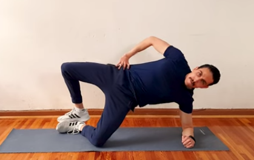

Abductors – Avançat
COM FER-HO PAS A PAS:
- Estira’t de costat al terra i col·loca’t recolzant el cos només amb la mà (només mig braç) i el genoll inferior.
- Eleva el maluc del terra fins que el cos quedi alineat (espatlles,maluc,genoll).
- Mantén les dues cames juntes amb els peus enganxats.
- Sense separar els peus, obre el genoll superior cap amunt.
- Atura’t un segon a dalt contraient fort el gluti.
- Baixa lentament el genoll mantenint sempre la tensió.
- Canvia de costat i repeteix.
SÈRIES:
- 3 sèries de 15–20 repeticions per costat.
- Descans de 30–45 segons.
CONSELLS:
- No deixis que el maluc caigui, mantén-lo sempre elevat.
- El moviment ha de ser lent i controlat, especialment quan baixes.
- Mantingueu els peus sempre enganxats, així el gluti mitjà treballa més.
